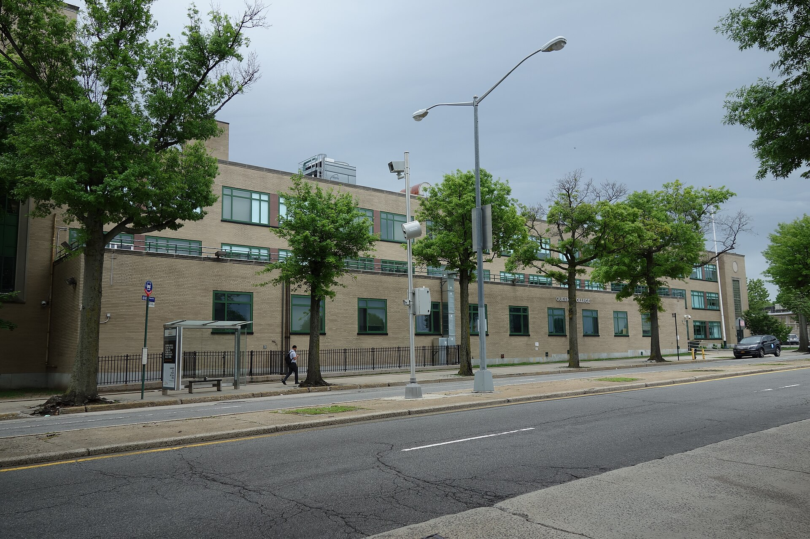

How to use this site

The site is built for political science majors, but most of it (law school, graduate school, internships, fellowships and events) works for any major. There's a lot here, and you don't need all of it. This is the quickest way through, in about five minutes.
Five steps
- 1. Pick your goal and year. On the home page, choose what you're aiming for (a PhD, a predoc, a policy master's, an MA or law school) and jump to your year. You'll see what to do this year, how to do it and what to apply to. Not sure what you want? Take the eight-question quiz at the bottom of the home page.
- 2. Read about your path. The Graduate school and Law school pages explain each degree and the year-by-year plan. If you want to work after college, start with Jobs you can get.
- 3. Find opportunities. Opportunities lists every internship, fellowship, program and event on the site. Tap a popular filter like "Closing in 30 days" or "Paid or fully funded," or search a topic like "housing" or "Brooklyn." Open "Who can apply, pay and details" to see if it fits, then check the official website. If you live outside New York City, tap "Live outside NYC" to hide programs that only take city residents; Long Island and Westchester opportunities are listed too (search "Nassau," "Suffolk" or "Westchester").
- 4. Save and set reminders. Tap "Save to my list" on anything you like; "Your saved list" keeps them on this phone or computer. "Add to calendar" puts a deadline in Google, Apple or Outlook with reminders two weeks and two days before. You can also subscribe to every deadline at once from the top of Opportunities.
- 5. Read a guide when you need it. Guides are grouped by when you'll use them: Start here, Get ready, Apply, Jobs and careers, Paying for it, and Support. Read Recommendation letters before you ask, and the glossary when a term is new.
If you only have ten minutes this semester
- Check what's due. Open Opportunities and tap "Closing in 30 days."
- Apply for QC money. Fill out QC's General Scholarship Application; one form covers many awards.
- Meet one professor. Go to office hours once. Talk to your professors has an email you can copy.
Take it with you
- Handouts and QR codes. Handouts for graduate school and law school (in standard or large print), a flyer and a QR code are on the About page.
- Questions. Email Mohamed at mohamed.aljahmi@qc.cuny.edu. Dates change, so always confirm on each official website.